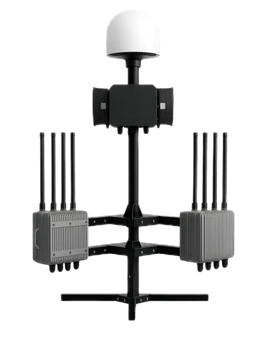
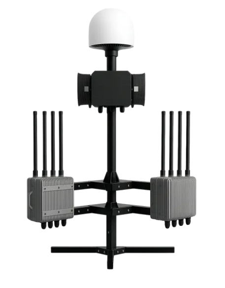
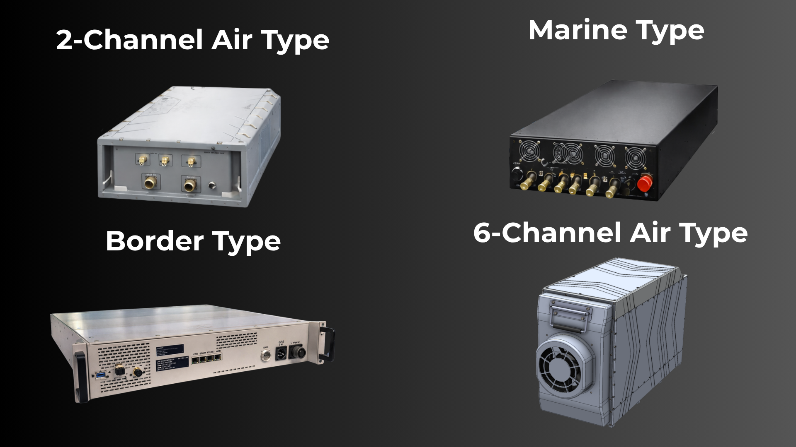
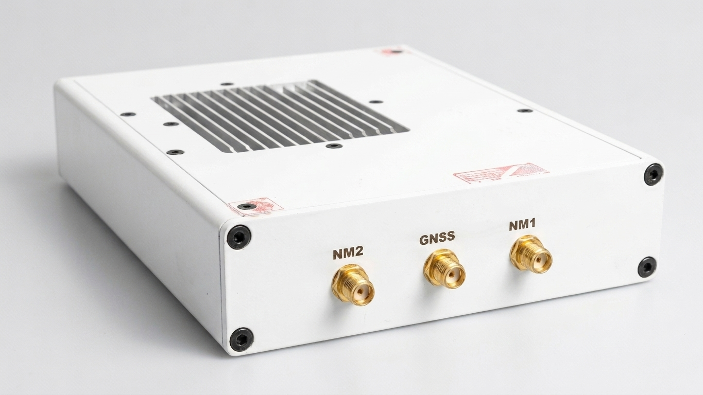
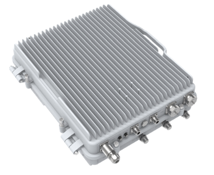

Counter-Drone & Electronic Warfare
Fixed, vehicle-mounted, backpack and handheld systems for full-band drone detection (70 MHz – 6 GHz), AI-guided tracking and smart jamming or spoofing. Protects borders, facilities and forward operating bases.
ERK designs and produces counter-drone and electronic warfare systems, signal intelligence platforms, network monitoring tools and sovereign tactical communications — for defence, border and security forces worldwide.

Detect, intercept, communicate, dominate. Every ERK system shares a unified command architecture, so platforms deployed separately still operate as one.
Fixed, vehicle-mounted, backpack and handheld systems for full-band drone detection (70 MHz – 6 GHz), AI-guided tracking and smart jamming or spoofing. Protects borders, facilities and forward operating bases.
Multi-platform IMSI catchers from aerial to maritime configurations. Passive and active interception across 2G through 5G NR. Mission-deployable in minutes.
A private LTE base station for isolated operations, combined with AI-assisted network monitoring that detects rogue base stations and IMSI catchers across all generations.

Full-band detection to 15 km, FPV video capture, AI-guided tracking and smart wideband jamming. Fixed, vehicle, backpack and handheld variants, scalable through 1+N network integration.
Explore ERK SHIELD →
Active and passive interception from 690 MHz to 2.7 GHz across GSM, UMTS, LTE and 5G NSA. Aerial, marine, border and vehicle variants, stackable to 16 channels.
Explore ERK TRACE →
Detects unauthorised base stations and foreign IMSI catchers in real time. Full 5G NR SA band sweep in under 60 seconds, deployable by a single operator.
Explore ERK WATCH →
Sovereign connectivity for off-grid operations — up to 384 simultaneous users across four carriers, with an integrated network monitoring sub-system.
Explore ERK GRID →All products share a unified command architecture for complete situational awareness.
Alongside its RF hardware, ERK fields a multimodal intelligence suite for authorised government and law-enforcement customers. Capability details are released under NDA following end-user verification.
20 billion+ indexed data points across social, messaging and dark web sources, resolving identity from a single phone number, username or email.
3.5 billion face database searched in about 10 seconds, with multi-face group analysis and air-gapped on-premises deployment.
200 GB of advertising-identifier data per day, resolving device location history, behavioural patterns and real identity.
ERK works with defence ministries, border agencies, law-enforcement bodies and critical-infrastructure operators. Tell us the mission and we will scope the system.